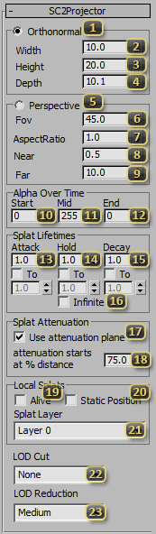

Node: Effect: Projector
The SC2Projector Node, found in the Particle Systems create panel, is used for applying a material to a particular part of existing geometry. These are often referred to as Splats throughout StarCraft II. They are used for spell effects, blast marks, waypoints, terrain decoration, and more. They accept materials just like regular geometry and particle effects, and cast their material onto any geometry they intersect, provided that geometry Accepts Splats.
'Orthonormal' (Mutually Exclusive with Perspective) makes the Projector behave like a box. It will be the same width no matter how close the projector is to the target surface.
'Width' is the width of the box for an orthonormal projector. This corresponds to the horizontal axis of textures used with the projector.
'Height' is the height of the box for an orthonormal projector. This corresponds to the vertical axis of textures used with the projector.
'Depth' is the length of the box. This is used to control how far a surface can be from the projector and still receive its effects.
'Perspective' (Mutually Exclusive with Orthonormal) makes the Projector behave like a camera. The closer the projector is to the surface, the smaller the effect will be.
'Fov' represents the angle (in degrees) that defines the vertical bounds of the projector
'AspectRatio' is the ratio of the width of the projector to the height of it. A larger number will make the projector wider along the texture's horizontal axis.
'Near' denotes the distance from the projector's origin where the Projector's material will begin to show.
'Far' denotes the distance from the projector's origin that the material will cease to draw.
'Start' (Alpha Over Time) defines the opacity (from 0-255) of the projector when it first spawns, at the beginning of the 'Attack' phase.
'Mid' (Alpha Over Time) defines the opacity (from 0-255) of the projector during the middle of its lifetime, during the 'hold' phase.
'End' (Alpha Over Time) defines the opacity (from 0-255) of the projector at the end of its lifetime, at the completion of the 'decay' phase.
'Attack' (Splat Lifetimes) the amount of time it takes the splat to fade in after being spawned. At the end of this time, the splat will be at the 'Mid' opacity. The 'To' checkbox can be used to allow this to be a random time within the specified range.
'Hold' (Splat Lifetimes) the amount of time a splat is alive after being spawned by an event. Throughout this time, the splat will be at the 'Mid' opacity. The 'To' checkbox can be used to allow this to be a random time within the specified range. After this time has elapsed for event-driven splats, the projector will automatically cease to be alive begin to decay.
'Decay' (Splat Lifetimes) the amount of time it takes the splat to fade out once no longer 'Alive'. At the end of this time, the splat will be at the 'End' opacity. The 'To' checkbox can be used to allow this to be a random time within the specified range.
'Infinite' makes the 'Hold' time extend infinitely, preventing the Projector from ever disappearing.
'Use attenuation plane' makes it so that the splat will fade out as the surface gets further from the projection source. When off, the projector will be at full opacity across its entire length.
'Attenuation starts at % distance' pushes the start of the attenuation further from the projection source, making the splat display at full opacity for more of its range. 0 is a standard linear attenuation from the source. 100% would be equivalent to not using attenuation at all.
'Alive' makes the Projector on by default. Most static splats will have this enabled. This may be off in the case of dynamically generated splats. Turning off this value will trigger the splat to fade out as defined by 'Decay' (Splat Lifetimes).
'Static Position' Forces the splat to remain in the same location it spawned at. If the splat should stick in its location after creation, even if the parent model moves, use this flag.
'Splat Layer' denotes the general sorting group of the Projector. This is used to sort overlapping splats so that everything looks correct. Note that Projectors that use SC2 SplatTerrainBake respect relative ordering with other projectors using that material type, but all draw "below" splats using any other material type. The sort order of projectors in one layer is undefined, but the sort order between layers is well defined. The descriptions for the values below show them in order, where the first entry draws on top of all others, and the last entry is below all others.
'Material UI Layer' is used for in-world effects that are part of the user interface. This includes selection circles and similar effects.
'Power Layer' contains rarely active effects such as the Protoss power grid that should be above most other splats, but below UI.
'AOE Layer' conventionally holds AOE cursors and some special spell effects.
'Building Layer' is most often used for the dark shadow that occurs under buildings.
'Layer 3' is a generic layer that occurs above creep, that is open for use as the user sees fit. Spell effects, blast marks, or any other general case splats usually occur on a generic layer, and are adjusted freely between them to correct visual artifacts.
'Layer 2' is a generic layer that occurs above creep, that is open for use as the user sees fit. Spell effects, blast marks, or any other general case splats usually occur on a generic layer, and are adjusted freely between them to correct visual artifacts.
'Layer 1' is a generic layer that occurs above creep, that is open for use as the user sees fit. Spell effects, blast marks, or any other general case splats usually occur on a generic layer, and are adjusted freely between them to correct visual artifacts.
'Layer 0' is a generic layer that occurs above creep, that is open for use as the user sees fit. Spell effects, blast marks, or any other general case splats usually occur on a generic layer, and are adjusted freely between them to correct visual artifacts.
'Under Creep Layer' is a general use layer that occurs below creep. It is most often used for effects that appear above roads but below creep.
'Hardtile Layer' is the most common layer for visual additions like paint, grunge, or damage that appear to be part of the terrain texture. Roads are also drawn on this layer.
'LOD Cut' denotes which graphical setting level the Projector will no longer be displayed at. If critical for gameplay, leaving this at 'None' is prudent. Otherwise, it is useful for performance scaling.
'LOD Reduction' denotes which graphical setting the Projector can potentially be not shown at if there are too many splats on screen. It is more critical to be judicious with allowing splats to disappear here, as it is best to leave room available for gameplay-critical splats.